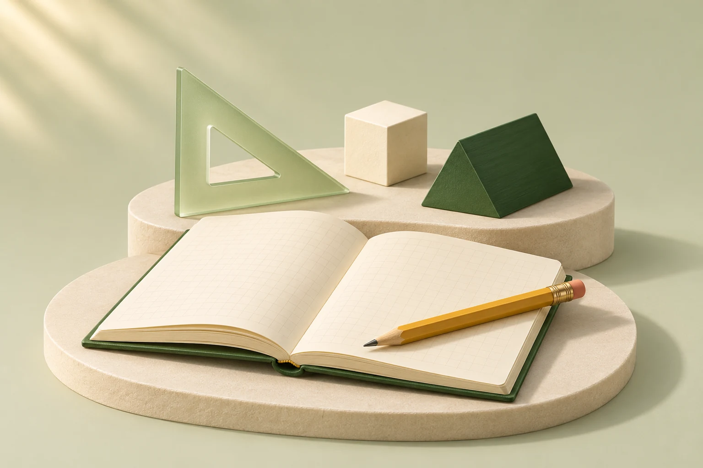
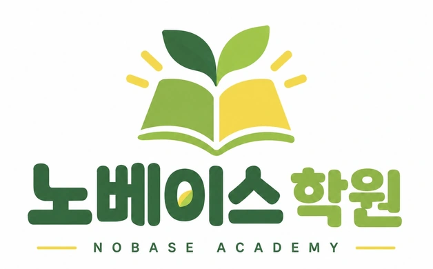

GENERATED / 01
영어 · 읽고 이해하는 힘
책과 단어 카드를 중심으로 읽기·어휘의 의미를 담았습니다.
권장 위치 · 영어 교육과정 소개
1536 × 1024 · 116 KB웹용 파일 저장 ↗
영어와 수학, 그리고 매일의 학습관리.
차분한 초록과 종이의 질감으로
노베이스의 학습 경험을 그렸습니다.
AI로 제작한 브랜드 콘셉트 이미지 · 실제 학원 공간 아님
전용 이미지 4종을 제작했습니다. 초록·아이보리·오커 색상과 부드러운 측광을 통일하고, 각 장면에는 하나의 학습 의미를 담았습니다.
책과 단어 카드를 중심으로 읽기·어휘의 의미를 담았습니다.
권장 위치 · 영어 교육과정 소개

격자 노트와 입체 도형으로 개념과 풀이의 관계를 표현했습니다.
권장 위치 · 수학 교육과정 소개
플래너와 인덱스로 계획·복습·피드백의 흐름을 보여줍니다.
권장 위치 · 학습관리 소개 또는 상담 자료
자연광과 넉넉한 여백으로 오래 공부할 수 있는 분위기를 만들었습니다.
권장 위치 · 학원 철학 소개 또는 콘텐츠 표지
후보 18개 중 8개를 내려받아 직접 확인했습니다. 밝은 분위기와 소재가 맞는 3장을 보조 이미지로 확보했습니다.

제공된 문서에서 1,254 × 779px 원본을 추출했습니다. 기존 홈페이지 이미지보다 큰 원본을 보관하고, 웹용 파일도 별도로 준비했습니다.
함께 추출된 타사 화면과 기획용 시안은 분석 자료로 분류했습니다. 재사용 이미지 목록에는 포함하지 않았습니다.
웹용 로고 저장 ↗현재 홈페이지에 사용 중인 정물과 투명 레이어도 함께 정리했습니다. 아래 5개는 이번에 새로 제작한 이미지 수에 포함하지 않았습니다.
공식 자료의 설명, 실제로 확인한 이미지, 노베이스에 적용한 판단을 구분했습니다. 출처는 각 항목에서 확인할 수 있습니다.
노베이스의 이미지는 차분한 첫인상, 구체적인 학습 설명, 실제 학원의 신뢰를 각각 담당하도록 구성합니다. 영어·수학과 초등 고학년부터 중고등 내신 관리까지 아우르는 만큼, 밝은 크림색 바탕에 짙은 초록과 종이·책·학습 도구의 질감을 중심으로 잡았습니다.
2026년 11월 4일 기준으로 교육 분야 12개와 기업 디자인 분야 10개, 총 교육·기업 레퍼런스 22개를 조사했습니다. 구몬은 미국과 한국의 운영 사례를 구분했습니다. 별도로 이미지 원칙과 접근성·성능 자료를 참고하고, 스톡 후보 18개 중 8개 파일을 내려받아 시각 검수한 뒤 3개를 선정했습니다.
책, 노트, 연필, 도형처럼 수업과 가까운 소재를 씁니다. 초록·아이보리·오커를 중심으로, 왼쪽 위에서 들어오는 부드러운 빛과 비슷한 시점으로 묶었습니다. 영어·수학·관리 이미지를 나란히 놓았을 때 한 학원의 자료처럼 읽히는 것이 목표입니다.
토스의 제작 체계, IBM의 일관된 형태, Duolingo의 명료한 실루엣을 노베이스에 맞게 해석했습니다. 특정 기업의 캐릭터나 고유 장면은 가져오지 않습니다.
정물 이미지는 과목을 알아보는 단서로 사용합니다. 문장 구조, 풀이 단계, 체크 항목, 다음 학습 목표는 실제 텍스트와 정확한 도식으로 보여줍니다. 수식·점수·학습 기록을 생성 이미지에 맡기지 않습니다.
Brilliant·매쓰플랫의 구체적 학습 화면과 Dropbox·Atlassian의 이미지 역할 구분을 참고한 적용안입니다. 노베이스에서 운영하지 않는 앱이나 검증되지 않은 성과를 만들어 보이지 않습니다.
생성 이미지와 스톡은 분위기를 보조합니다. 강사가 어떻게 지도하는지, 학원이 어디에 있는지, 어떤 기록을 남기는지는 실제 사진과 확인된 자료로 채워야 합니다. 이번 확보물에는 노베이스의 실제 교실·재원생·강사 사진이 없습니다.
Oxford Learning·Art of Problem Solving·구몬의 사례와 Open University의 제작 가이드를 종합하면, 다음 투자 우선순위는 장식 이미지 추가보다 실제 학원 촬영입니다.
새로 만든 이미지 4종은 기존 책·새싹 대표 이미지의 색감과 재질을 참고해 제작했습니다. PNG 원본을 보관하고, 내용·색·구도를 바꾸지 않은 비율 유지 축소로 WebP를 준비했습니다. 아래 용량은 이미지 파일 자체의 크기이며 페이지 전체의 전송량이나 속도 측정값은 아닙니다.
초록 천 표지 책, 아이보리 어휘 카드, 연필과 책갈피로 읽기·정리의 분위기를 표현했습니다. 카드의 짧은 Aa 표기는 검수했으며, 실제 수업 문장이나 교재 내용은 넣지 않았습니다.
권장 배치: 영어 과정 소개 옆 또는 영어 상세 카드의 첫 이미지. 과목명과 학습 설명은 이미지 밖의 텍스트로 제공합니다.
사용 구분: 노베이스용으로 새로 생성한 브랜드 이미지. 실제 교재·기록·수업 사진으로 표시하지 않습니다.
삼각자, 정육면체·삼각기둥, 격자 노트와 연필을 구성했습니다. 수식·축·눈금의 정확성을 설명하는 교구 사진이 아니라 수학을 상징하는 브랜드 정물입니다.
권장 배치: 수학 과정 소개 옆. 실제 풀이 방식이 필요한 곳은 검산한 식·도형을 별도 텍스트와 SVG로 추가합니다.
사용 구분: 노베이스용으로 새로 생성한 브랜드 이미지. 실제 교재·기록·수업 사진으로 표시하지 않습니다.
초록 노트, 펼친 플래너, 색인 탭과 클립으로 계획·정리의 의미를 전달합니다. 학생 이름·점수·실제 일정·성과 수치는 포함하지 않았습니다.
권장 배치: 진단→계획→수업·복습→피드백 흐름 옆에 한 번 사용합니다. 네 단계 각각에 큰 그림을 반복하지 않습니다.
사용 구분: 노베이스용으로 새로 생성한 브랜드 이미지. 실제 교재·기록·수업 사진으로 표시하지 않습니다.
밝은 나무 책상 위 빈 노트·초록 책·연필을 부드러운 자연광으로 연출한 생성 정물입니다. 특정 학원의 교실이나 비품을 촬영한 사진이 아닙니다.
권장 배치: 학원 철학 또는 학습 습관 소개의 가로 배너 후보. 첫 화면의 기존 책·새싹 이미지와 동시에 크게 배치하기보다 역할을 나눕니다.
사용 구분: 노베이스용으로 새로 생성한 브랜드 이미지. 실제 교재·기록·수업 사진으로 표시하지 않습니다.
4종의 큰 화면용 합계는 446.4 KiB, 작은 화면용 합계는 125.2 KiB입니다. 영어·수학·관리는 3:2에 가까운 구성, 조용한 공부 정물은 16:9에 가까운 구성입니다. 한 비율로 강제 크롭하기 전에 책·도형·연필이 잘리지 않는지 확인합니다.
공식 사진 페이지와 이용 조건을 확인하고 실제 파일을 검수했습니다. 얼굴·특정 교실·뚜렷한 브랜드 로고를 피한 보조 이미지입니다. 사진의 원래 색과 구도를 유지했으며, 새 생성 세트와 함께 과하게 섞지 않도록 대체 후보 성격으로 확보했습니다.
밝은 아이보리 플래너·흑연 연필·클립. 학습 계획과 상담 준비 섹션에 적합. 공간의 여백이 넉넉하고 얼굴·상표·수식이 없다.
권장 배치: 수강 안내 또는 학습 계획 섹션의 보조 이미지.
확인할 점: 일반 스톡 이미지로 표기. 실제 노베이스의 학습기록/시간표가 아니며 인쇄된 영문 요일이 보인다.
얼굴 없이 연필을 쥔 손과 빈 줄노트에 초점을 맞춘 학습 디테일. 실제 질감과 집중하는 행동을 전달한다.
권장 배치: 학습 철학의 학습 장면 또는 콘텐츠용 배너.
확인할 점: 연필 부스러기와 붉은 노트 가장자리가 보여 깨끗한 3D 대표 이미지 옆에서 적게 사용. 실제 재원생·강사의 손이라는 설명 금지.
회색·아이보리 노트와 작은 초록 식물, 부드러운 자연광. 현재 책·새싹 브랜드의 실제 사진 질감 대안이며 왼쪽 여백이 넓다.
권장 배치: 철학 섹션 배너 또는 블로그 표지.
확인할 점: 상징적인 성장 이미지다. 실제 학원 시설·비품으로 오인시키는 설명 금지.
선정한 스톡 3종의 웹용 합계는 135.1 KiB입니다. 내려받아 검수한 나머지 5종은 로고 노출, 어두운 분위기, 금융·업무용 표, 학원 메시지와 맞지 않는 문구 등의 이유로 제외했습니다. 나머지 후보 10종은 검색 결과·메타데이터 수준의 검토이며 실제 이미지 검수까지 완료한 목록으로 세지 않았습니다.
웹사이트 기획서 DOCX에 포함된 로고를 추출했습니다. 원본은 1254 × 779 PNG이며, 별도로 628 × 390 WebP 후보를 준비했습니다. 웹용 파일은 18.6 KiB입니다.
기존 브랜드를 확인하고 비교하는 자료로 보관합니다. 헤더에 사용할 때는 작은 크기의 글자 선명도, 여백, 배경과의 조화를 먼저 확인해야 합니다. 원본이 래스터 파일이므로 확대해도 선명한 벡터 로고를 확보했다는 뜻은 아닙니다.
출처는 사용자가 제공한 기획서입니다. 타사 참고 화면에서 로고를 가져오거나 새 상표를 임의로 만든 자료가 아닙니다. 최종 CI 원본이 별도로 있다면 해당 파일을 우선 사용합니다.
연출 준비 상태: 새 생성 이미지 4종은 배경과 사물이 합쳐진 한 장의 이미지입니다. 이미지 전체의 등장·미세한 확대는 가능하지만, 책·연필·도형을 각각 독립적으로 움직이려면 레이어 분리나 추가 제작이 필요합니다. 기존 대표 이미지의 분리된 책·새싹·연필 소재는 별도의 기존 자산으로, 신규 8종 수에 포함하지 않았습니다.
아래에서 확인한 내용은 공식 자료의 설명과 검수한 샘플, 노베이스 적용은 이번 프로젝트를 위한 해석입니다. 타사의 학생·교재·캐릭터·서비스 화면은 분석용이며, 확보한 사용 이미지 목록에 포함하지 않았습니다.
확인한 내용
노베이스 적용: 영어/수학/학습관리를 같은 카메라 각도·조명·재질·색으로 묶고, 한 이미지에 한 개의 학습 의미만 담는다. 모바일에서 구분되는 큰 실루엣과 여백을 유지한다.
적용 범위: 듀오 캐릭터, 고유 색상 조합과 장면을 복제하지 않는다. 중고등 대상에 과한 유아형 캐릭터를 확장하지 않는다.
검증 방식: 공식 제작 설명 읽기 + 글에 연결된 일러스트 실제 픽셀 확인. 홈페이지 전체 화면/현재 애니메이션은 관찰하지 않음. 공식 근거 보기
확인한 내용
노베이스 적용: 브랜드용 정물과 정확한 설명용 도식을 구분한다. 수식·축·텍스트는 생성 이미지에 맡기지 않고 SVG/HTML로 만들어 과목 전문성을 보여준다.
적용 범위: 노베이스가 제공하지 않는 AI 앱 UI를 만들거나, 예시 정확도/성취도를 실제 학생 성과처럼 표시하지 않는다.
검증 방식: 현재 공식 홈페이지 텍스트 + 연결된 수학 풀이/진도 이미지 실제 픽셀 확인. 실시간 제품 동작은 미관찰. 공식 근거 보기
확인한 내용
노베이스 적용: 상담 안내에는 달력·진단지·계획표 같은 구체적 물건을 쓰고, 위치는 실제 주소/입구 사진으로 연결한다.
적용 범위: 글로벌 체인의 평가·회원 수·성과 수치를 차용하거나 무료진단 제공을 사실 확인 없이 추가하지 않는다.
검증 방식: 공식 홈페이지 구조/문구 + 단계 아이콘 2개 실제 픽셀 확인. 메인 사진과 전체 레이아웃은 시각 검수하지 않음. 공식 근거 보기
확인한 내용
노베이스 적용: 학년별 이미지의 나이감을 구분한다. 노베이스는 얼굴 없는 학습 도구 정물을 당장 사용할 수 있고, 동의받은 실제 학생/손 사진은 추후 가장 좋은 신뢰 소재가 된다.
적용 범위: 타사 학생 사진을 노베이스 재원생으로 보이게 쓰거나, 실제 제공하지 않는 태블릿 학습을 암시하지 않는다.
검증 방식: 공식 홈페이지 문구 + 현재 연결된 hero 사진 실제 픽셀 확인. 공식 근거 보기
확인한 내용
노베이스 적용: 학습 도구 이미지뿐 아니라 추후 실제 수업의 집중/질문/피드백 순간을 가로 크롭으로 촬영하면 교습 관계를 전달할 수 있다.
적용 범위: 카메라를 보고 웃는 스톡 사진만 반복하지 않는다. 진짜 교실인 듯 보이는 임의 교실 이미지는 위치·시설 소개에 쓰지 않는다.
검증 방식: 공식 홈페이지 문구 + 공식 학생 사진 실제 픽셀 확인. 메인 슬라이더 동작은 미관찰. 공식 근거 보기
확인한 내용
노베이스 적용: 전문성의 핵심은 이미지 수보다 검증 가능한 사람과 자료다. 대표/강사 실사진 1장과 확인된 지도 이력, 실제 사용 자료를 후속 촬영 우선순위로 둔다.
적용 범위: 합격·수상·대학 로고·강사 경력을 임의로 넣지 않는다. 특정 인물을 생성해 실제 강사처럼 사용하지 않는다.
검증 방식: 공식 페이지 문구와 이미지 대체텍스트 확인. 실제 픽셀 미검수. 공식 근거 보기
확인한 내용
노베이스 적용: 노베이스 학습관리 그림은 진단→계획→오답→다음 목표의 관계를 보여주면 좋다. 실제 데이터가 없으면 점수 대신 체크 항목과 짧은 피드백 예시를 쓴다.
적용 범위: 경쟁 서비스의 리포트 UI를 캡처해 재사용하지 않는다. 임의 점수·그래프를 실제 관리 성과로 보이게 하지 않는다.
검증 방식: 공식 상담·홍보 페이지 + 연결된 리포트 이미지 실제 픽셀 확인. 공식 근거 보기
확인한 내용
노베이스 적용: 고학년·중고등 과정에는 귀여운 소품만 쓰기보다 읽기/이해/풀이의 연결 도식을 병행한다. 녹색 한 계열로 과목 관계를 명확하게 표현한다.
적용 범위: 타사 캠페인 문구나 고유 무한대 형태를 복제하지 않는다. 노베이스에 없는 ESL/EFL 분리반·인증·커리큘럼을 암시하지 않는다.
검증 방식: 공식 캠페인 페이지 내용 + desktop hero 그래픽 실제 픽셀 확인. 공식 근거 보기
확인한 내용
노베이스 적용: 관리 예시를 한 장의 서류/노트로 구체화한다. 실제 앱이 없으므로 기기 목업보다 종이 학습 계획·피드백 카드가 현재 서비스에 더 정직하고 잘 맞는다.
적용 범위: 디지털 앱을 제공하지 않는데 휴대전화 앱 화면으로 보이게 연출하지 않는다. 대규모 수상 배지는 도입하지 않는다.
검증 방식: 공식 홈페이지 문구 + 전국학력진단 기기 목업 실제 픽셀 확인. 공식 근거 보기
확인한 내용
노베이스 적용: 전문적인 정물 방향으로 가장 잘 맞는다. 노베이스용 빈 노트/책/연필을 절제된 조명으로 만들고, 정확한 수식·본문은 자체 작성해 별도로 얹는다.
적용 범위: 타사 교재의 문제와 페이지를 추출하거나 교원 자료를 노베이스 교재처럼 사용하지 않는다.
검증 방식: 공식 브랜드 이야기 내용 + 교재 사진 실제 픽셀 확인. 공식 근거 보기
확인한 내용
노베이스 적용: 영어 이미지는 단순 알파벳 장식에 그치지 않고 리딩 노트·문장 구조·어휘 카드처럼 학습 행동을 드러내도록 만든다.
적용 범위: 영어 수업을 외국인 얼굴·국기·랜드마크만으로 표현하지 않는다. 연결된 Getty 이미지의 재사용 권한을 가정하지 않는다.
검증 방식: 공식 페이지 내용과 이미지 링크 메타데이터 확인. 원본 이미지 요청이 시간 초과되어 픽셀 검수하지 못함. 공식 근거 보기
확인한 내용
노베이스 적용: 세 과정의 그림을 학년별 내용에 맞춘다. 초등에는 분수/도형 조각, 중등에는 방정식/좌표, 고등에는 정확한 함수/그래프를 쓸 수 있다. 실제 모집 과정과의 일치는 별도 확인한다.
적용 범위: 그림의 분위기만 맞추고 고등 과정까지 너무 기초적인 숫자 장면으로 통일하지 않는다. EBS 썸네일·캐릭터·문항을 무단 재사용하지 않는다.
검증 방식: 공식 학년별 교과 구조, 콘텐츠 이름과 이미지 대체텍스트 확인. 썸네일 실제 픽셀은 미검수. 공식 근거 보기
교육 분야의 픽셀 검수는 각 사례에 명시한 이미지에 한정됩니다. Art of Problem Solving·British Council LearnEnglish Teens·EBSMath는 본문·대체텍스트 중심으로 확인했습니다. Khan Academy와 Ringle Teens는 직접 열기에서 충분한 본문을 확보하지 못해 위 12개 확정 사례에 포함하지 않았습니다.
토스처럼 잘 정리된 이미지와 움직임을 만들기 위해 제작 과정과 디자인 원칙을 조사했습니다. 기업의 공식 제작기·브랜드 가이드를 중심으로 정리했으며, 글에 설명된 기법이 현재 홈페이지 모든 화면에 그대로 적용되어 있다고 가정하지 않았습니다.
확인한 내용
노베이스 적용: 이미지 수를 늘리기 전에 카메라 각도·초록색 범위·종이 질감·조명 방향을 하나의 제작 규격으로 고정한다. 영어/수학/학습관리 소재도 같은 규격에서 만든다.
이미지 제작안: 공통 제작 프롬프트 1개와 용도별 피사체 변형 3개. 나열식 장식 대신 각 이미지에 하나의 학습 의미를 부여.
검증 한계: 2023년 사내 시스템 제작기이며 현재 토스 홈페이지의 제작 스택이나 성능을 설명하지 않는다.
확인한 내용
노베이스 적용: 학원 인상용 일러스트, 영어·수학 개념 도식, 실제 학원 사진은 역할이 다르다. 한 가지 3D 그림으로 모든 신뢰 정보를 대체하지 않는다.
이미지 제작안: 대표 장면 1개, 과목별 설명 소재, 실제 수업/교재/공간 사진의 별도 슬롯. 실제 사진이 없으면 학원 사진처럼 보이는 합성 장면으로 채우지 않는다.
검증 한계: 브랜드 가이드의 설명을 근거로 한 적용안이며 전환율 효과는 측정하지 않았다.
확인한 내용
노베이스 적용: 상담 버튼 주변에는 이미지를 추가하지 않고, 학습관리 노트는 읽을 수 있는 HTML 예시로 유지한다. 과목 그림은 각각 하나의 역할만 갖게 한다.
이미지 제작안: 영어 읽기 Spot 1개, 수학 사고 Spot 1개. 복습·피드백은 기존 코드 도식을 보완하고 래스터 이미지로 대체하지 않는다.
검증 한계: 제품 UI 중심 지침이다. 마케팅 랜딩 페이지에는 적용 범위를 판단해야 하며 콜라주 금지를 홈페이지 전체 규칙으로 일반화하지 않았다.
확인한 내용
노베이스 적용: 광고용 강렬함을 본문에 그대로 가져오기보다, 학습 도구와 종이의 디테일을 가까이 보여준다. 학원 홈에서는 크림·초록 중심의 좁은 팔레트를 지킨다.
이미지 제작안: 전체 교실을 꾸며낸 사진보다, 실제 교재·필기·교사의 피드백을 가까이 촬영하는 구도 계획. 지금 만들 자료는 텍스트 없는 도구 디테일.
검증 한계: 2024 캠페인 제작기이며 현재 제품 UI의 전체 디자인 규칙을 대변하지 않는다.
확인한 내용
노베이스 적용: 전문성은 더 많은 장식보다 정보 위계에서 나온다. 새 자산을 모두 한 화면에 배치하지 않고 대표 이미지와 학습 증거에 우선순위를 준다.
이미지 제작안: 연한 배경의 이미지 3개를 라이브러리로 확보하되 실제 홈페이지에는 1~2개씩 선택 적용. 카드마다 3D·아이콘·배경무늬를 중첩하지 않는다.
검증 한계: 앱 인터페이스 리뉴얼 원칙을 학원 랜딩에 해석한 것으로, 동일 스타일 적용이 정답이라는 주장은 아니다.
확인한 내용
노베이스 적용: 새싹이 먼저 자라고 연필이 정리되는 한 가지 짧은 이야기만 유지한다. 모든 사물이 영구 반복 부유하도록 만들지 않는다.
이미지 제작안: 같은 앵커 위치의 시작/완료 자세, 개별 투명 레이어, 최종 정지 구도를 함께 제작한다.
검증 한계: 검색 인덱스 기반 본문 확인임을 명시. 페이지에 표기된 12/24/60fps 가이드를 웹사이트의 필수 수치로 옮기지 않는다.
확인한 내용
노베이스 적용: 대표 장면은 풍부한 종이·목재 질감을 쓰되 과정 그림은 더 단순하게 만든다. 과목별 이미지의 카메라, 크기, 여백은 같은 규격으로 맞춘다.
이미지 제작안: 3:2 과목 이미지 세트와 16:9 설명용 사진을 별도 규격으로 제작. 같은 사물의 전체 장면/근접 디테일을 선택할 수 있게 원본을 보관.
검증 한계: 이 연구에서는 가이드의 픽셀 샘플을 직접 시각 검수하지 않았다.
확인한 내용
노베이스 적용: 웹사이트에서도 중요한 사물이 모바일 크롭과 모션 이동에 잘리지 않도록 여백을 설계한다. 고해상도 원본과 가벼운 웹용 파일을 분리 보관한다.
이미지 제작안: 각 파일에 사용 비율과 초점 위치, 안전 여백, 대체 정지 이미지 규칙을 기록. 투명 레이어는 실제 배경 위에서 가장자리를 검사.
검증 한계: tvOS와 앱 이미지 지침을 웹 디자인에 해석한 것이며 tvOS 포맷/배경 규칙을 웹의 의무 요건으로 취급하지 않는다.
확인한 내용
노베이스 적용: 질감 있는 책·문구는 래스터로, 정확해야 하는 문장·수학식·체크 표시는 HTML/SVG로 만든다. 모든 시각물을 생성 이미지에 맡기지 않는다.
이미지 제작안: 생성 이미지에는 읽어야 할 한글·수학식을 넣지 않고 화면 텍스트로 조합할 깨끗한 노트/교재 소재를 준비.
검증 한계: 역사적 제작 사례다. 2017년 브라우저 지원 표나 API 우선순위를 2026의 최신 기술 조언으로 재사용하지 않는다.
확인한 내용
노베이스 적용: 이미지 라이브러리를 늘려도 버튼·카드·글꼴의 현재 규칙은 유지한다. 작은 과목 썸네일은 피사체와 색만으로 식별되게 한다.
이미지 제작안: 텍스트 없는 과목 소재 + 별도 HTML 제목. 이미지마다 크기·라이선스·대체문구를 함께 관리.
검증 한계: Shopify 앱의 사용 맥락이다. 해당 서비스의 색상 의미나 앱 아이콘 규격을 노베이스에 그대로 적용하지 않는다.
모션 원칙의 보충 근거로는 Dropbox 모션 가이드, 따뜻한 그림과 단순한 목적별 분류의 사례로는 Apple의 Headspace 인터뷰를 참고했습니다. Mailchimp 브랜드 자산 안내도 확인해, 공식 다운로드가 제공되는 기업 자료라고 해도 노베이스의 로고·장식으로 자유롭게 재사용할 수 있다고 해석하지 않았습니다.
확보한 이미지를 전부 추가하기보다 페이지마다 목적이 분명한 몇 장을 선택합니다. 아래는 권장 배치안이며, 최종 적용 시 실제 레이아웃과 모바일 화면에서 다시 확인합니다.
기존 책·새싹 중심 이미지를 대표 시각물로 유지합니다. 학원명, 영어·수학, 모집 대상과 상담 행동이 먼저 읽히도록 하고 새 정물 4종을 한 화면에 콜라주로 겹치지 않습니다. 첫 화면을 교체한다면 조용한 공부 정물을 한 장의 대안으로 비교합니다.
PC: 문구와 이미지의 좌우 균형을 맞춥니다. 모바일: 핵심 소개와 탐색 버튼 다음에 이미지를 두고, 큰 여백 때문에 교육과정이 지나치게 아래로 밀리지 않게 합니다.
영어와 수학 정물은 같은 면적·같은 크롭·같은 위치에 배치합니다. 초등 고학년·중등·고등 카드마다 같은 이미지를 반복하기보다, 먼저 과목을 구분하는 두 개의 대표 이미지로 사용합니다.
학년별 차이는 텍스트와 정확한 예시 도식으로 설명합니다. 초등은 분수·도형, 중등은 식·좌표, 고등은 함수 등의 내용이 실제 수업과 일치할 때만 추가합니다. 현재 확정된 모집 범위를 넘어 구체적인 반 구성·횟수·성과를 만들어 넣지 않습니다.
학습계획 정물을 옆에 놓고, 진단→계획→수업과 복습→피드백을 실제 텍스트로 보여줍니다. 노트 이미지 안에 작은 글씨를 붙이거나 기기 목업으로 가상의 앱 화면을 만들지 않습니다.
모바일에서는 네 단계의 세로 목록이 먼저 읽히게 하고, 이미지는 흐름을 보조하는 한 번의 장면으로 둡니다. 실제 익명화 기록을 확보하면 생성 정물보다 해당 자료를 우선 검토합니다.
생성한 조용한 공부 정물, 연필을 쥔 손 스톡, 노트 위 식물 스톡 중 한 장을 선택합니다. 종이의 질감과 집중하는 행동이 문구를 뒷받침하도록 합니다. 식물은 성장의 상징으로 사용할 수 있지만 학습 성과를 입증하는 사진으로 설명하지 않습니다.
같은 구간에 3D 정물·사진·도식 세 종류를 모두 모으지 않고, 주변 내용과 가장 어울리는 하나를 고릅니다.
전화 연결 버튼, 추후 확정할 상담 링크, 주소와 지도 동선을 우선합니다. 전화번호를 본문에 큰 텍스트로 노출하지 않으려는 기존 요청을 유지합니다. 카카오톡 상담 링크가 확정되지 않은 상태에서 연결되는 것처럼 보이게 만들지 않습니다.
주소는 사용자가 제공한 정읍시 상동 74-1, 2층을 기준으로 실제 지도 목적지를 확인합니다. 새 이미지로 길찾기용 지도를 그리거나 스톡 교실을 시설 사진으로 넣지 않습니다. 입구·계단·2층 문 사진을 촬영하면 이 구간의 우선 이미지로 사용합니다.
토스·Headspace·Dropbox에서 가져올 것은 계속 움직이는 물체의 수보다 무엇을 먼저 보고, 어떤 의미로 이어지는지입니다. 다음 수치는 원본 기업의 측정 결과가 아니라 노베이스 구현을 위한 시작 제안이며, 실제 기기에서 조정해야 합니다.
방향의 근거: Dropbox 모션 가이드 · Headspace 모션 가이드. Headspace는 공식 자료의 검색 인덱스 본문을 확인했으며, 현재 웹페이지에서 동작을 직접 재생한 결과는 아닙니다.
새 이미지 세트는 초기 완성도를 높이는 자료입니다. 학원을 선택하는 데 필요한 신뢰는 노베이스의 실제 사람·장소·지도 기록이 채웁니다. 우선순위는 아래와 같습니다.
위치 구간과 지도 링크 옆에 사용합니다. 사진에 보이는 차량 번호·택배 라벨·개인 연락처 등 불필요한 식별 정보는 촬영 단계에서 피합니다.
인물 옆에는 확인된 역할과 지도 이력만 적습니다. 생성 인물을 실제 강사나 재원생으로 사용하지 않습니다.
사진 속 교재 표지·게시물·학생 이름이 불필요하게 크게 드러나지 않도록 정리합니다. 웹에 넣을 사진은 자연스러운 색을 유지합니다.
이름·학교·연락처·계정·학생을 알아볼 수 있는 세부 정보는 제거합니다. 예시 자료는 예시라고 표시하고 실제 점수·합격 성과처럼 설명하지 않습니다. 교재 페이지는 공개 권한을 확인한 범위에서만 사용합니다.
공통 촬영 기준: 가로 3:2 또는 16:9와 세로 구도를 함께 확보하고, 중요한 손·책·얼굴을 가장자리에서 떨어뜨려 모바일 크롭 여지를 남깁니다. 부드러운 자연광, 초록·아이보리와 어울리는 배경, 소수의 정돈된 도구를 권장합니다. 원본과 게시용 파일, 촬영일·촬영자·게시 범위를 함께 기록합니다.
정보를 전달하는 사진은 해당 문맥에서 필요한 의미를 대체텍스트로 전달합니다. 옆의 설명을 그대로 반복하는 장식 이미지는 빈 대체텍스트를 사용합니다. 복잡한 도식은 짧은 이미지 설명만으로 끝내지 않고 본문에 같은 내용을 제공합니다.
영어 과정명, 모집 학년, 수업 안내, 상담 버튼 문구는 이미지에만 넣지 않습니다. 생성물의 Aa는 장식 단서이며 교육 내용을 대신하지 않습니다.
운영체제의 움직임 줄이기 설정을 반영해 이동·확대·패럴랙스 등 불필요한 연출을 끄고 정지 장면을 보여줍니다. 애니메이션이 없어도 정보 순서와 상담 행동이 유지되어야 합니다.
WCAG 2.3.3은 상호작용으로 발생하는 비필수 움직임을 비활성화할 수 있도록 하는 AAA 기준입니다. WCAG 2.2.2의 자동 움직임 관련 조건도 별개로 확인해야 하므로, 자동으로 시작해 다른 내용과 함께 5초 넘게 계속 움직이는 장면은 정지 수단을 제공하거나 짧게 종료하도록 설계합니다. 이 제안만으로 사이트 전체의 접근성 준수를 검증한 것은 아닙니다.
생성 이미지에는 약 800px와 최대 약 1600px의 WebP 두 버전을 준비했습니다. 같은 내용·비율의 후보를 srcset과 sizes로 연결하고, 렌더링 크기와 픽셀 밀도에 맞춰 선택되게 합니다. 작은 화면이라고 무조건 작은 파일을 고정하는 대신 실제 표시 크기를 기준으로 판단합니다.
스톡은 최대 변 1400px 한 버전이므로 최종 배치가 작은 카드로 정해지면 추가 크기를 만들 여지가 있습니다. 이미지의 너비·높이를 예약하고, 모바일 크롭에서 책 모서리·도구·필기하는 손이 잘리지 않는지 확인합니다.
처음 보이는 대표 이미지는 발견과 로딩이 늦어지지 않게 하고, 아래쪽 이미지는 화면 접근 시점에 맞춰 불러옵니다. 핵심 이미지에 무조건 지연 로딩을 적용하거나, 장식 파일을 먼저 받느라 문구가 늦게 보이지 않도록 합니다.
현재 확인한 것은 파일 치수·용량·시각 결과입니다. Lighthouse 점수, 실제 방문자의 LCP, 프레임 속도, 저사양 기기 배터리 영향은 이번 이미지 조사에서 측정하지 않았습니다. 실제 홈페이지 배치 후 모바일·PC에서 로딩, 스크롤, 재방문, 움직임 줄이기 설정을 확인해야 합니다.
제작 원칙의 추가 근거: NN/g 이미지 일관성과 정보성 · NN/g 기억에 남는 이미지 · Open University 일러스트 제작 브리프. 이 자료들을 노베이스의 대상·내용에 맞게 해석했으며, 이미지 변경에 따른 상담 전환율 상승을 입증한 실험은 아닙니다.
Unsplash 공식 라이선스 · Pexels 공식 라이선스
브랜드 홈페이지와 이용 조건은 변경될 수 있습니다. 역사적인 제작기, 제품 앱 가이드, TV 플랫폼 가이드는 각 문서의 범위 안에서 참고했습니다. 모든 사례의 현재 반응형 화면·실제 애니메이션·성능·전환 효과를 검증한 것은 아닙니다. Headspace는 검색에 노출된 공식 모션 설명을 확인했으며 직접 재생 검수는 하지 않았습니다.
최종 홈페이지에 반영할 때는 크롭·대체텍스트·느린 네트워크에서의 로딩·움직임 줄이기 설정을 점검합니다. 실제 학원 사진, 지도 목적지, 강사 소개, 교습 방식의 구체적 내용은 확보된 사실과 맞는지 별도로 확인합니다. 이미지가 완성되었다는 이유로 확인되지 않은 운영 정보를 추가하지 않습니다.